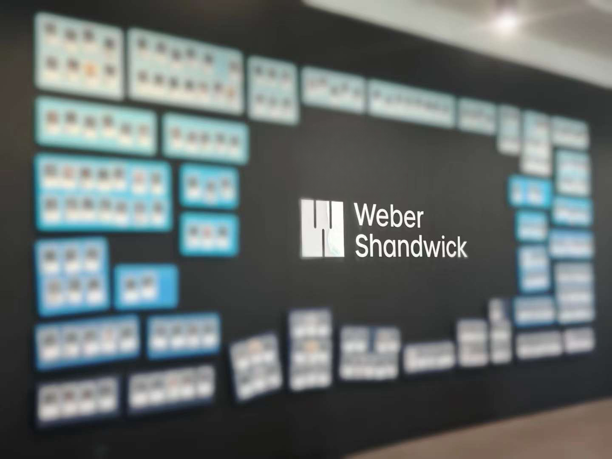
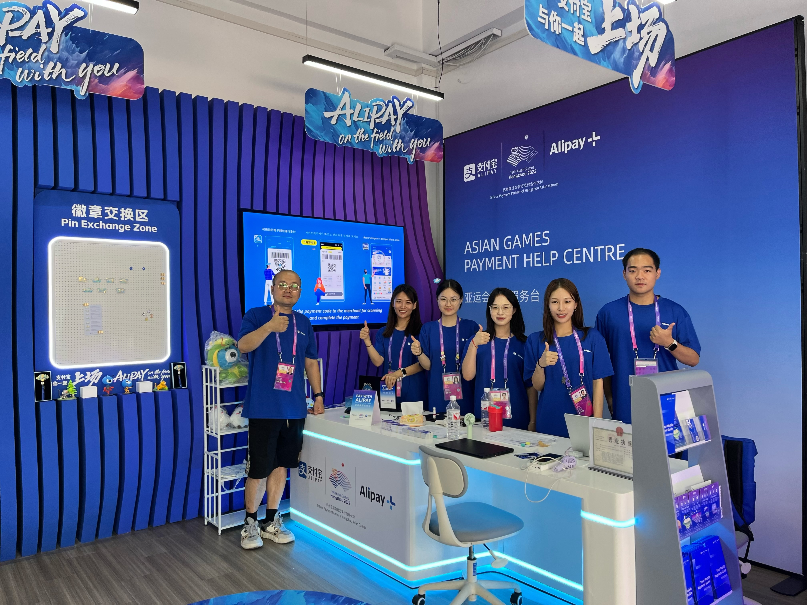

Tongfeng Wang
About Me
I am a Master student who interested in sports communication, with a particular focus on data analytics and digital media strategies within this dynamic field. My research explores how artificial intelligence can enhance audience engagement, content strategy, and the overall effectiveness of sports media. As detailed in my CV, I have conducted studies on audience behavior, digital sports marketing, and the role of emerging technologies in sports communication. My work is driven by a commitment to advancing the field through rigorous analysis and innovative methodologies, aiming to bridge the gap between traditional sports media and the evolving digital landscape.
Research Interests
- Artificial Intelligence in Sports Communication
- Esports and Virtual Sports Communication
- International and Cross-Cultural of Sports
Researches
- [May. 2024] FOOTBALLNET: a Deep LEARNING NETWORK for FOOTBALL COMPETITION PREDICTION
- [Nov. 2024] The current state of Manchester City Football Club's communication on new media platforms - the example of the Bilibili app.
-
 Weber ShandwickWeber Shandwick——Public Relations Sports Brands Group Intern (Jan.2024 - Apr.2024)
-
 Aasin Games & Paralympic GamesAnt Group & Lenovo——Bilingual Support Engineer (Aug.2023 - Nov.2023)
-
Sports JournalistBeijing Jinghan Xinyuan Cultural Communication Co., Ltd—— Lecturer (Mar.2023 - Jul.2023)2022 FIFA WorldcupSohu—— Media Sports Content Intern (Nov.2022 - Jan.2023)
 All Football App
All Football App—— Operations and Risk Control Intern (May.2022 - Aug.2022)
All Football App
All Football App—— Operations and Risk Control Intern (May.2022 - Aug.2022)
Extracurricular Activity
Opening and Closing Ceremonies of the 2022 Beijing Winter Olympics
- Served as the representative of the Chinese university students to pass the national flag.
- Served as the volunteer in the grandstand to guide the atmosphere and be responsible for the security.
- Won the honour of Outstanding Volunteer and Third Prize in Winter Olympics Essay.
Head of Outreach Department in Football Referee Association
- Responsible for recording and publishing the association’s daily activities and publishing articles on the public website of the association and the Beijing Football Association.
- Won the honour of Outstanding Association.
Powered by Jekyll and Minimal Light theme.
2024 International Conference on Sports Technology and Performance Analysis (ICSTPA), 2024.
Code
PDF
Undergraduate thesis
PDF